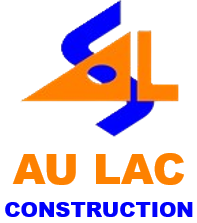

Dev: LEDAT
Hệ thống ôn luyện, kiểm tra và đánh giá năng lực chuyên môn.
Hệ thống thông tin địa lý, tra cứu quy hoạch trực tuyến.
Chuyển đổi hệ tọa độ VN2000 và tra cứu dữ liệu địa chính dễ dàng.
Công cụ định vị thông minh và đo đạc phương vị chuẩn xác.